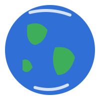
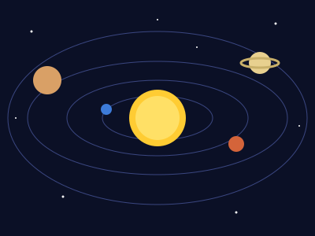
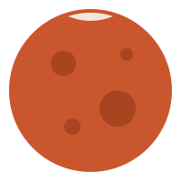
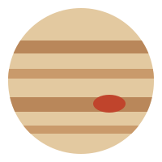
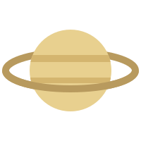

Terra
O único planeta conhecido com água líquida na superfície e com vida.
EXPLORE O ESPAÇO
O Sistema Solar é formado pelo Sol e por tudo o que gira ao redor dele: planetas, luas, asteroides e cometas. Venha conhecer os oito planetas e descubra quanto você pesaria em cada um deles!
Conhecer os planetas
CONHEÇA OS VIZINHOS
Os quatro planetas mais próximos do Sol são rochosos. Os quatro mais distantes são gigantes formados principalmente por gases e gelo.

O único planeta conhecido com água líquida na superfície e com vida.

Chamado de Planeta Vermelho por causa do óxido de ferro (ferrugem) do seu solo.

O maior planeta. Sua Grande Mancha Vermelha é uma tempestade maior que a Terra.

Famoso pelos seus anéis, formados por pedaços de gelo e rocha.
VOCÊ SABIA?
FAÇA O TESTE
A gravidade muda de um planeta para outro, por isso a balança marcaria um valor diferente. Preencha os dados e descubra!